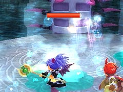
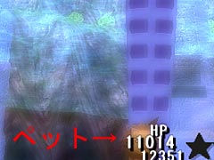
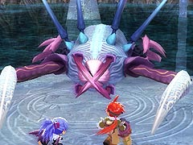

ボスの攻撃としては、腕を使った突っつきと、毒性の液体を吐いてくる攻撃だけです。
突っついてくる攻撃は、攻撃の場所に応じて逃げるか、初めの2 発をよけてから、ボスの真下へ移動するといいです。

しかし、毒性の液体は、地面についてからしばらく効力を発揮するので、足場を移動する際は注意しなければなりません。特に、突っつきをよける際はなおさらです。
また、水中に落ちるとダメージを食らうので注意してください。ゲームの仕様上、ジャンプ中に攻撃を食らうとよく吹き飛ぶので、落ちるのを防ぐためにあまりジャンプしない方がいいかもしれません。


それ以外にも間接的な攻撃として、「そーどふぃっしゅ」のようなモンスターを吐き出す攻撃があります。上の画像ようなポーズを取った後、モンスターを吐き出します。
吐き出されたモンスターは何かと邪魔なので、さっさと倒すといいです。ちなみにフックギアを使って、水中に投げ飛ばせばそれだけで倒せます。